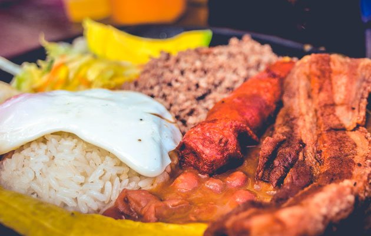
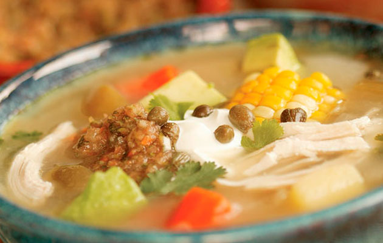
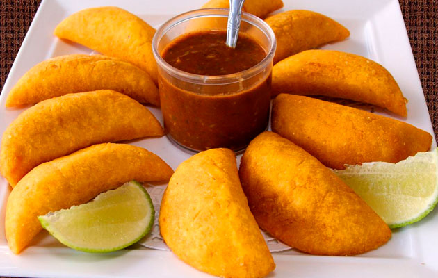
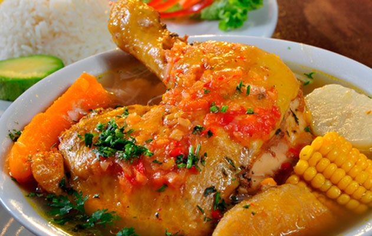
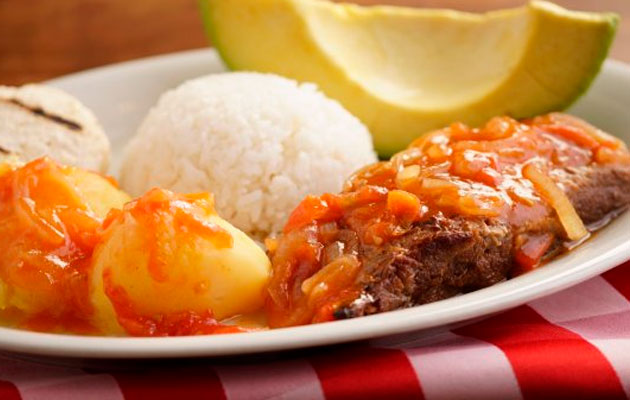

Favoritas






Sopa de Ajiaco
4 de abril de 2019
Hay diferentes versiones de Ajiaco, pero generalmente se hace con pollo y tres tipos de papas, mazorca y una hierba llamada guascas. Esta hierba le da a esta sopa un sabor maravilloso. Es muy importante utilizar guascas y papa criolla, ya que son los ingredientes principales de este plato. El Ajiaco es uno de mis platos favoritos y es absolutamente delicioso.
Bandeja paisa
10 de abril de 2019
Bandeja paisa es algo que he comido toda mi vida, y si tuviera que elegir mi última comida en esta tierra, éste es el plato que eligiría sin ninguna duda.
Tradicionalmente la Bandeja Paisa incluye frijoles, arroz blanco, chicharrón,carne en polvo, chorizo, huevo frito, plátano maduro, aguacate y arepa, pero se puede sustituir la carne en polvo por carne de res o de cerdo a la parrilla. Normalmente suelo hacer los frijoles y la carne en polvo el día anterior para que la receta sea más fácil.